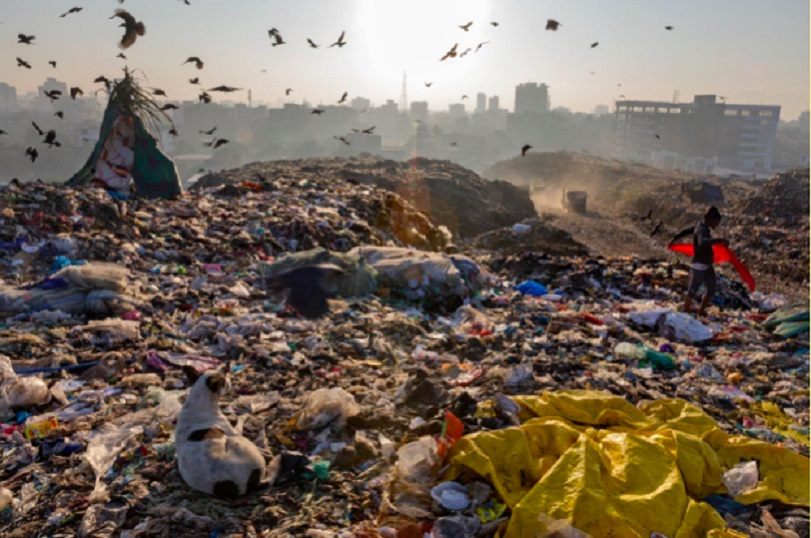

Leading the Charge for a Healthier Planet
Join the Eco-Conscious Movement to protect our environment, one sustainable action at a time.
Welcome to the Eco-Conscious Movement!
We’re a passionate team dedicated to creating a sustainable future by advocating for sustainable climate change adaptation & mitigation, plastic pollution control, environmental justice, proper waste management, and innovative solutions like the circular economy and waste valorization.
Through public education and data-driven initiatives, we tackle terrestrial and aquatic pollution challenges head-on. Our work is rooted in scientific research and public education, with the goal of inspiring meaningful change at both individual and community levels.
We believe that by understanding our impact, we can create a healthier planet for generations to come.
Meet Our Founder

Ajibade Sulaiman Temitope
Environmental sustainability advocate and water-quality specialist with seven years of experience in laboratory analysis, community environmental education, and climate-action programme coordination.
As a dedicated environmental leader, Ajibade is driving real change through:
School sensitisation and education ;
Effective plastic-pollution campaigns ;
Hands-on community cleanups .
Ajibade's commitment to public environmental advocacy has earned him recognition as an Environmental Ambassador by Whistler FM.
With a strong capacity for laboratory research and environmental data interpretation, Ajibade is passionate about communicating complex scientific concepts to the public. Through the Eco-Conscious Movement, he is committed to solving climate change and pollution challenges through sustainable development strategies and policy-driven environmental reform.
Our Team & Volunteers

Our Thematic Areas
Climate Action – A Collective National Task
Nigeria is highly vulnerable to climate change due to its geography, population size, and dependence on climate-sensitive sectors like agriculture. With flooding phenomena in the North East and North Central-areas hitherto known for low amounts of precipitation- and droughts in the rainforest South, the rainfall patterns is highly unpredictable, the consequences are visible in every region of the country. It is a collective national task.
Climate action in Nigeria is therefore not the responsibility of one group — not just the youth, not just the government, not just NGOs. It is a collective national task.
We bridge the gaps in knowledge and information through awareness campaign and public advocacy.

Raising a Generation of Environmental Stewards

Nigeria stands at a critical point in its environmental journey. From plastic pollution choking our waterways to desertification moving rapidly across the north, flooding sweeping through coastal cities, and waste mismanagement affecting public health—our nation faces urgent ecological challenges.
Yet in the midst of these challenges lies Nigeria’s greatest asset: its youth. With over 60% of the population under age 25, Nigeria has the human potential to champion a greener, cleaner, and more sustainable future.
Eco-conscious Movement believe raising a generation of environmental stewards in Nigeria is not just timely—it's essential for national development.

Plastic Pollution: Taking Collective Action
Plastic pollution is one of Nigeria’s most urgent environmental problems. From Lagos to Kano, Port Harcourt to Onitsha, and even remote villages, plastic waste has become an everyday sight — clogging drainage channels, littering markets, polluting rivers, and harming both human health and ecosystems.
Nigeria generates an estimated 2.5 million tonnes of plastic waste annually, and a large portion ends up in our oceans, canals, roadsides, and dumpsites. The River Niger, the largest river in Nigeria empty 35196 tons of plastic waste into the Gulf of Guinea making it one of the 10 most plastic polluting rivers in the world.
The consequences are severe, but the solutions are within reach if everyone plays their part. We need a complex system transformation on;
- Improved waste management infrastructure
- Stronger regulations on plastic production and use
- Public education campaigns to change consumer behavior
- Community clean-up initiatives
- Promotion of alternatives to single-use plastics
Environmental Injustice

Environmental injustice remains one of the most pressing but least discussed challenges affecting millions of Nigerians today. From oil spills in the Niger Delta to toxic dumps near poor communities, from mismanaged waste sites in urban slums to unequal access to clean water in rural towns—environmental harm in Nigeria does not affect everyone equally. Those who contribute the least to pollution often suffer the most from its consequences.
Environmental injustice has become one of the most critical but least addressed issues in Nigeria’s development story. It refers to the unequal distribution of environmental benefits and burdens, where certain communities—often poor, rural, or marginalized groups—bear the greatest risks from pollution, resource exploitation, and environmental degradation.
In Nigeria, this inequality is shaped by a mixture of weak environmental governance, poverty, uneven development, corruption, and industrial activities that prioritize profit over people. The Eco-Conscious Movement is here listening for the deaf, speaking for the dumb, and fighting for the weak.
Water pollution Control / Prevention
Wetlands are currently degraded by natural and anthropogenic activities, which deteriorate their quality and push them to the brink of extinction. In the process of unplanned development, there arises the need for suitable conservation strategies. Unfortunately, over the years, less attention has been given to wetland loss worldwide.
Nigeria is blessed with an extensive network of waterbodies—rivers, lakes, streams, wetlands, coastlines, lagoons, and creeks—that support millions of lives and sustain the country’s economy. From the Niger and Benue rivers to Lake Chad, the Lagos Lagoon, River Kaduna, Oguta Lake, and countless smaller streams, these waters serve as sources of drinking water, food, transportation, culture, and biodiversity.
Despite their importance, waterbodies across Nigeria face severe neglect and degradation, driven by poor management, weak regulation, pollution, climate pressures, and lack of public awareness. This neglect now threatens public health, food systems, and long-term national development. Working together with our affiliate, Green Grower Association, are particularly adapting Nigeria’s agriculture and food system to sustainable practices by providing stakeholders with the right knowledge, skills and technology that optimize the use of water resources without compromising their availability for future.
We do this by promoting climate resilient agricultural practices, scoping and scaling of indigenous climate adaptation practices to enhance food production and over dependency on waterbodies for irrigation.
We also conduct water testing outreach programs in rural riverine communities, providing essential water quality assessments and educating residents about safe water practices. These initiatives empower local populations to monitor their water sources and take informed action to protect their health and livelihoods.

Be Part of the Change
Whether you want to volunteer, partner with us, or support our campaigns — your action matters.
Get Involved Today